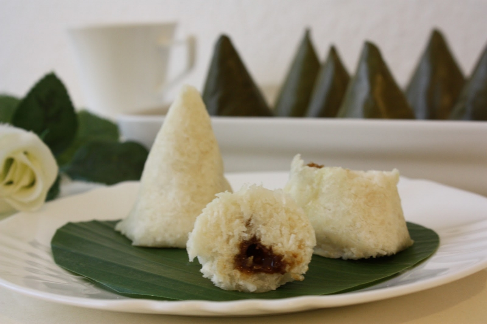

Lappet

Lappet adalah makanan yang berbetuk limas, menjadi makanan khas Batak yang terbuat dari beras/ketan yang digiling dan dibungkus dengan daun pisang.
Untuk cara pembuatannya juga cukup mudah. Berbahan dasar tepung beras atau ketan.
Tepung beras/ketan dicampur dengan sedikit gula putih, kelapa parut yang belum terlalu tua dan gula merah (gula aren) kemudian dikukus sampai matang.
Bahan & alat:
Bahan:
- 1kg tepung beras atau ketan
- 7 bulatan kecil gula merah
- 1 buah kelapa muda di parut
- Garam secukupnya
- Kayu manis secukupnya
- Air bersih
- Daun pisang secukupnya
- Minyak goreng secukupnya (olesan)
Langkah memasak:
- Langkah pertama, kukus daun pisang atau jemur diterik matahari, agar sedikit layu. Keringkan atau bersihkan daun pisang tersebut.
- Masak kelapa, gula merah dan kayu manis hingga tercampur rata dan wangi. Beri sedikit air jika terlalu kering dan jangan lupa tambahkan garam secukupnya.
- Campurkan tepung beras atau tepung ketan dengan air sedikit demi sedikit sambil diuleni. Buatlah adonan yang tidak encer, sehingga nanti dapat dibentuk.
- Setelah adonan lappet selesai, ambil daun pisang dengan ukuran yang tidak terlalu besar. Kemudian bulat-bulatkan adonan tadi dan masukkan kedalam daun pisang yang sudah diolesi dengan minyak makan.
- Beri lubang di tengah adonan, lalu masukkan kelapa yang sudah dimasak dengan gula merah sebelumnya dan tutup kembali adonan tersebut. Kemudian bungkus rapi menggunakan daun pisang.
- Masukkan kue lappet mentah kedalam kukusan, lalu kukus hingga matang.
- Jika sudah matang, hidangkkan kue lappet dengan teh hangat.